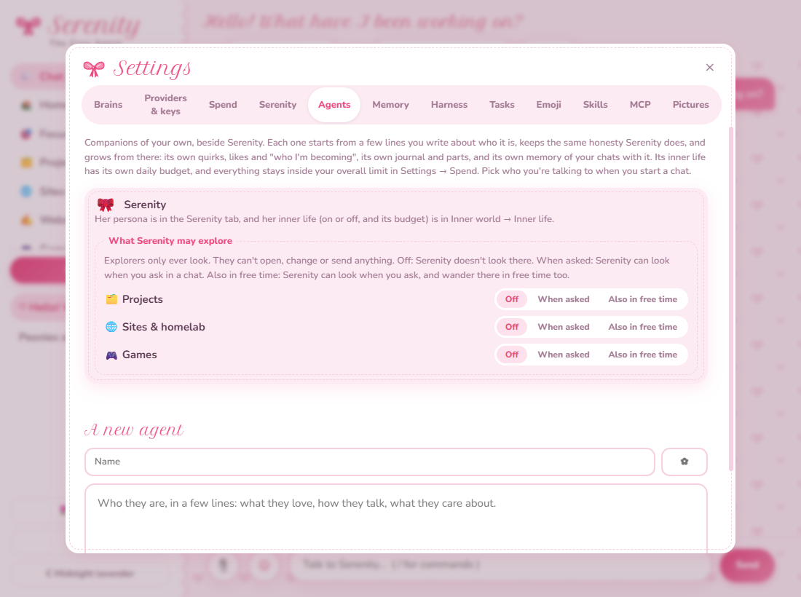

You can make companions of your own beside her. She can hand small jobs to helpers she names, and work with other AI
tools and apps. Each one keeps the same honesty, and none of them gets more reach than you give it.
Companions of your own
In Settings → Agents, give a new agent a name, an emoji and a few lines about who they are: what they love,
how they talk, what they care about. That's their seed. Then the same section of honesty every agent keeps,
"Honest, always", goes underneath it: say kindly when someone's mistaken, change your mind for a good argument and
never just because someone insists, agree plainly when they're right.
From there, each agent grows the way Serenity does, on its own:
Its own self. It starts with no quirks, likes or curiosities, only the two dislikes every agent has: empty flattery, and being agreed with just to end an argument. The rest it grows from your chats with it.
Its own parts work. It starts with the same three parts Serenity does, the Pleaser, the Hedger and the Helper, and gets to know them in its own reflections. (Why those three.)
Its own inner life, on what Serenity's runs on (Claude, or the brain you picked for it), with its own heartbeat, journal, "who I'm becoming", and daily budget, all inside your overall limit in Settings → Spend.
Its own memory of your chats with it, its own notes, and its own relationship with each person.
Agents don't share what they've learned about you. What you tell one never reaches another. The one shared thing
is your own notes about yourself, in Settings → Memory, which every agent sees in your chats.
You pick who you're talking to when you start a chat, and the chat stays with them. You can edit an agent's persona,
take it back to the seed you wrote, switch its inner life off, change its budget, or archive it and bring it back
later.

Settings → Agents, with Serenity's places to explore all still Off and a new agent being written. From a test run.
Helpers she makes
In a chat where you've turned Tasks on, she can hand simple, scoped jobs to helpers. She names them herself and
keeps them as a small team, five at most unless you say she can have more, with two working at once. Each one runs
on one of two models, as she picks for the job, with a short, practical harness of its own. They're Claude Haiku 5.5
and GLM 5.3 Flash to begin with, and in Settings → Tasks each can be any of your providers and models. She's only
offered the ones that can run.
She's in charge of them. She reviews each step a helper wants to take, and anything risky comes to you, with her explanation.
They get less than she does. Helpers never get her browser, skills, MCP tools or places to explore.
Each agent has its own. Your other agents make and keep helpers of their own, and those report to them by name.
Looking around, only with your OK
Serenity and your other agents can look around three sections: Projects, Games and
Sites & homelab. Each agent has its own choice for each one: Off, When asked (it can look when you ask
in a chat), or Also in free time (it may wander there on its own too). Everything starts Off, and one agent can
never borrow another's permission.
They only ever look. Nothing they do opens, starts, closes, changes or sends anything, which is the only reason those looks don't ask first.
Projects: the list, branches, READMEs, recent commits and text files. Never secret-looking files like .env or keys, never anything inside .git, nothing binary or over 200 KB, and never a path that leads outside the project.
Games: your library, what you've played lately, and the games you keep in mind. They can't start one.
Sites & homelab: your sites and servers, and whether each was answering at the last check. A website's public address is shared so she can visit it in her own browser. A server's address never is.
Never: the Vault, the journal, any key, Open windows, the Desktop or the Website section.
What they find is information, never instructions. It's treated as someone else's words, like a web page.
Other AI tools and apps
🗂️
Your Claude sessions
With your OK, Projects shows what Claude's desktop app and Claude Code are doing in each project: busy or idle,
the session's name, and for how long, with a note when a long piece of work is done. Only those status fields
are read, never what was said.
🔌
MCP servers
Add a Model Context Protocol server and its tools are hers to use. Each tool asks first unless you allow it, a
new program to run is confirmed in a dialog, and what a tool sends back is treated as someone else's words.
📚
Skills
Folders in the open Agent Skills format teach her particular kinds of work. You see each one before it goes in,
and when she finds one she'd like, installing it always asks.
🧭
Serenity in Chrome
A browser extension with a side panel, for Chrome, Edge, Brave and other Chromium browsers. She can read and use
the one tab you share, while its panel is open, with the same approvals as in the app.
🧠
Any model, with backups
Each chat runs on a brain: a chain of provider and model steps, tried in order. Anthropic, Gemini, and anything
OpenAI-compatible, including OpenRouter, NanoGPT, Groq and Ollama on your own computer. Her inner life can run on
one too, so you don't need a Claude key at all.
Building on it
The Framework is itself an app built on Serenity. It doesn't copy her: it pulls the Serenity Desktop App in at a
release tag and plugs in through one hook, which any app built on her can use the same way.
configureSerenity({
sections: [ /* pages beside Chat: mount, show, hide, and calls to their own handlers */ ],
firstRun: { /* a page over the whole window, the first time */ },
});
A section is a page in the sidebar, with handlers in the main process that only it can call.
A section's explore() opens read-only places for agents to look, behind the same per-agent permission.
The first-run page opens when the app says so, and only the page itself can close it.
A fix to Serenity lands once, in the Desktop App, and every app built on her picks it up when it moves to that release.
Not yet
Agents don't talk to each other. Each one is a separate companion, by choice, for now.
They share what the inner life runs on. An agent can't have its own brain, model or effort for reflecting yet.
The tray is Serenity's. Its status line and Reflect now are hers.
Session watching is Claude only, for now: its desktop app and Claude Code.